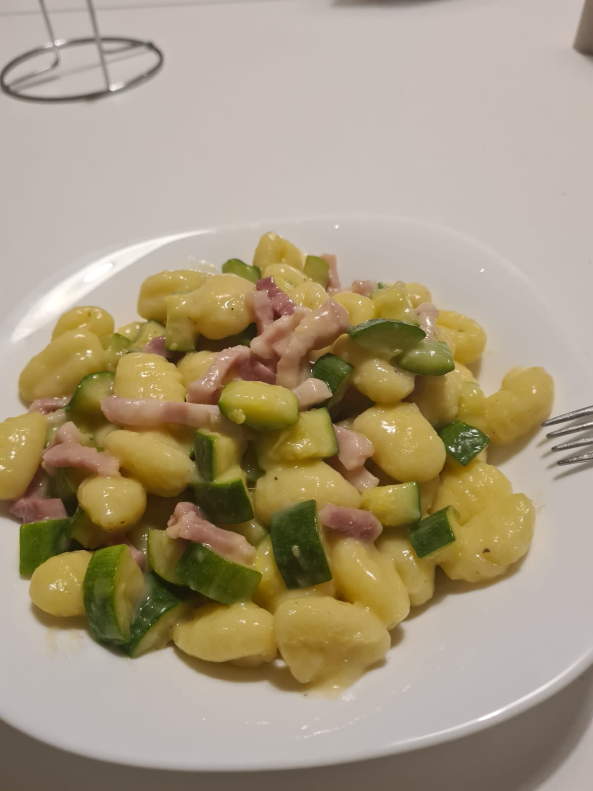

Gnocchi con Zucchine e Pancetta

Ingredienti
- 150g di gnocchi
- 100g di zucchine
- 75g di pancetta
- 50g di cipolla
- Sale q.b.
- Olio q.b.
Procedimento
- Tagliare la cipolla e le zucchine.
- Scaldare una padella con un filo d'olio, poi aggiungere la cipolla.
- Quando la cipolla è dorata, unire la pancetta e le zucchine.
- Cuocere fino a quando zucchine e pancetta sono pronte, quindi spegnere il fuoco.
- Portare a ebollizione l'acqua per gli gnocchi, salare e versarli.
- Quando gli gnocchi salgono in superficie (dopo pochi minuti), scolarli direttamente nella padella e riaccendere il fuoco.
- Mescolare bene per insaporire e servire, aggiungendo formaggio a piacere.